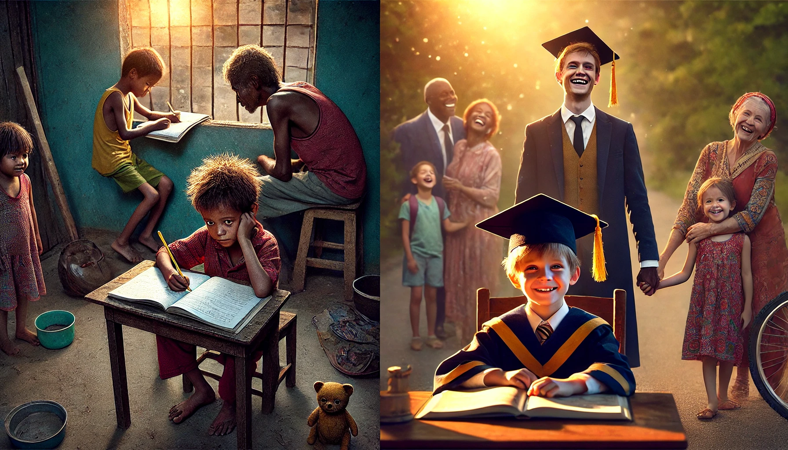

Your browser does not support the audio element.
The Journey of Hope: A Story of Resilience and Achievement
Explore the story of resilience and hope, chapter by chapter.
Chapter 1: A Quiet Beginning
Chapter 2: The Diagnosis
Chapter 3: Community sets in
Chapter 4: Carlos' Visit
Chapter 5: Late-Night Conversations
Chapter 6: The Turning Point
Chapter 7: Scholarship Announcement
Chapter 8: Graduation Day
Chapter 9: Inspiring the Next Generation
